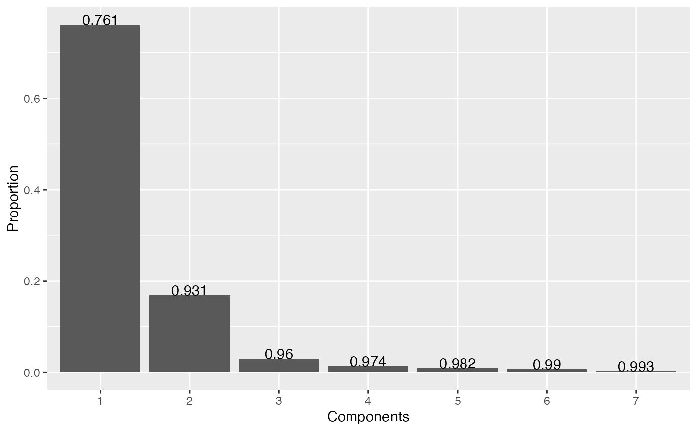
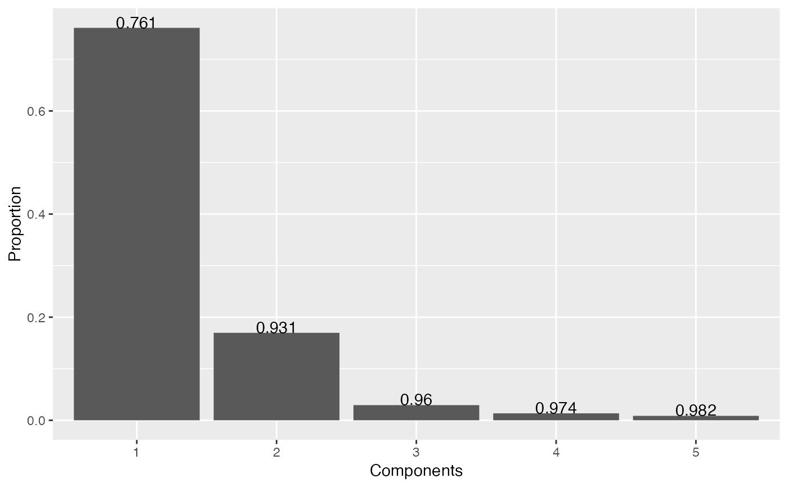

A set of functions around PCA/LDA eigen/trace. scree calculates their proportion and cumulated proportion;
scree_min returns the minimal number of axis to use to retain a given proportion; scree_plot displays a screeplot.
scree(x, nax) # S3 method for PCA scree(x, nax) # S3 method for LDA scree(x, nax) scree_min(x, prop) scree_plot(x, nax)
| x | a PCA object |
|---|---|
| nax | numeric range of axes to consider.
All by default for |
| prop | numeric how many axes are enough to gather this proportion of variance. Default to 1, all axes are returned defaut to 1: all axis are returned |
scree returns a data.frame, scree_min a numeric, scree_plot a ggplot.
#>#>scree(bp)#> # A tibble: 40 x 3 #> axis proportion cumsum #> <int> <dbl> <dbl> #> 1 1 0.761 0.761 #> 2 2 0.170 0.931 #> 3 3 0.0294 0.960 #> 4 4 0.0135 0.974 #> 5 5 0.00860 0.982 #> 6 6 0.00719 0.990 #> 7 7 0.00306 0.993 #> 8 8 0.00190 0.994 #> 9 9 0.00159 0.996 #> 10 10 0.00122 0.997 #> # ... with 30 more rowsscree_min(bp, 0.99)#> [1] 7scree_min(bp, 1)#> [1] 37scree_plot(bp)scree_plot(bp, 1:5)#>#>#>scree(bl)#> # A tibble: 3 x 3 #> axis proportion cumsum #> <int> <dbl> <dbl> #> 1 1 0.913 0.913 #> 2 2 0.0603 0.973 #> 3 3 0.0268 1.000